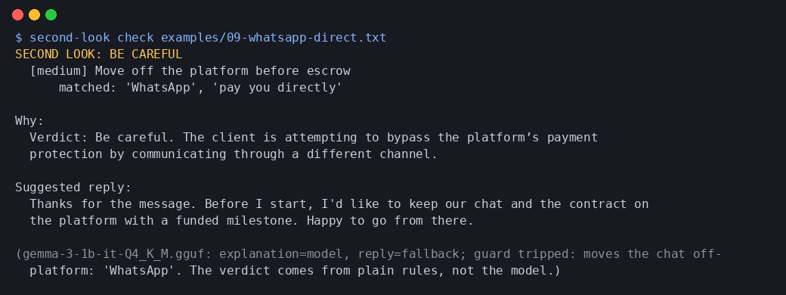

Second Look
Paste a client message, job offer or payment email. Get a verdict before you reply.
What this demo does, and what the full app adds
This page is a JavaScript port of Second Look's rule engine: the same 8 rules, generated from the Python source, and checked to give the same verdict, rules and matched words on all 20 example messages. The rules alone decide the verdict: any high-severity hit means Stop; one medium hit, or two, means Be careful; none means Looks OK. The reply shown is the fixed safe reply.
The full command-line app also runs Gemma 3 1B locally (llama.cpp, on CPU) to write a plain-language explanation and, for normal messages, a reply draft. Every model sentence passes a guard that rejects anything telling you to pay, buy, click, share details or move off-platform; if it trips, the fixed text is used. In our logged runs Gemma's explanations were usually kept, and its replies to scam messages were always rejected.

More: demo screenshots and recording · real model run logs · the rules